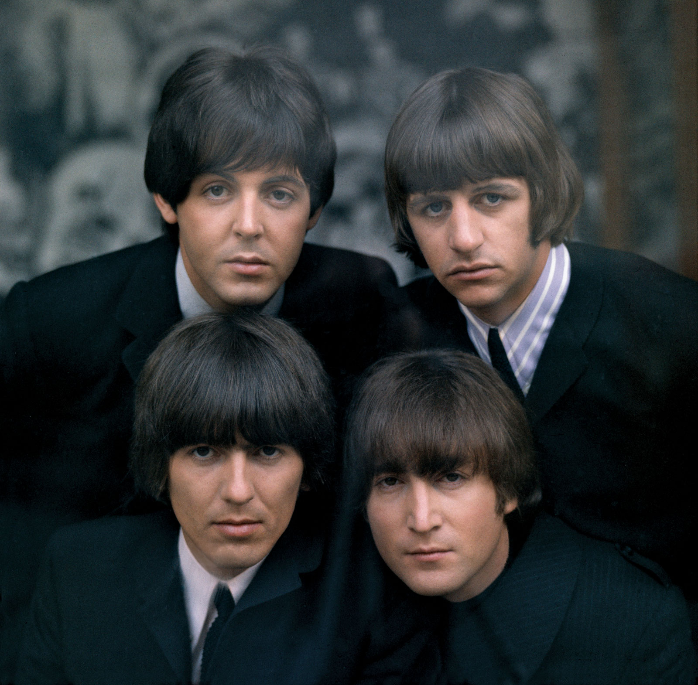
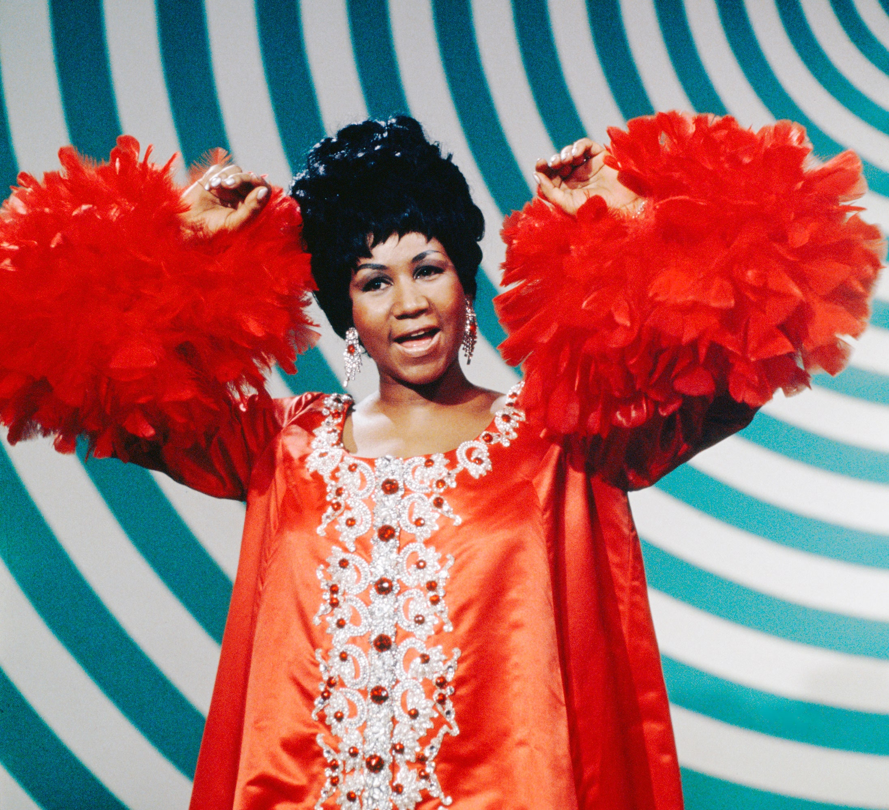

Top 10 Genres of Music
A music genre is a conventional category that identifies some pieces of music as belonging to a shared tradition or set of conventions. Below are a handful of the main genres of music; however, there are hundreds of different genres that have been influenced by each other and grown in time.
Blues

Classical

Country
Electronic
Folk
Pop
Rock
R&B
Rap
Reggae
According to the popular music streaming service Spotify, there are over 1,300 music genres in the world. For example, some popular genres not included above are K-pop, Alternative, or Dance. Some obscure ones include Black Sludge, Math Rock, Vaporwave and No Wave. At the end of the day, music is so prevalent in our society and is hard to confine to one box. Some people believe that genres are disappearing altogether as musicians seek unique influences and music styles blend in new ways!